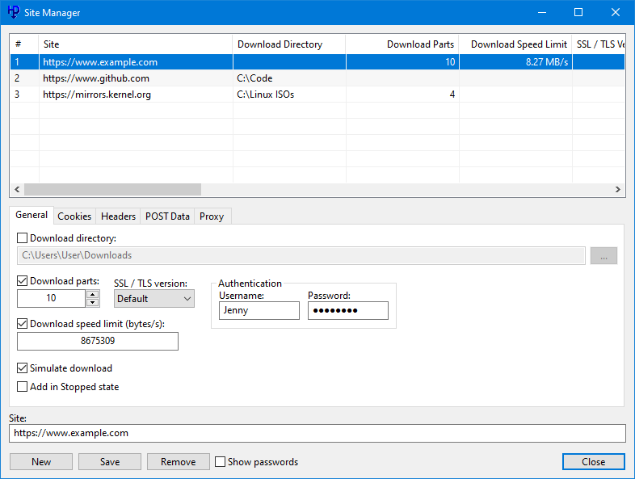

HTTP Downloader
HTTP Downloader is a download manager for the HTTP(S), FTP(S), and SFTP protocols. Maximize your download throughput by utilizing high performance input/output completion ports (IOCP). HTTP Downloader can open thousands of connections at a time and consumes very little system resources.
Download HTTP Downloader 32-bit
Download HTTP Downloader 64-bit
Version 1.0.5.0
Released on 9/2/2022
Version 1.0.2.4
Released on 7/5/2023
Version 1.0.2.2
Released on 1/3/2022
Version 1.0.2.2
Released on 1/3/2022
HTTP Downloader is a high-performance, multi-part download manager. You can Start, Pause, Stop, and Queue up to 100 downloads at a time. Each download can be split into 100 parts. That's 10,000 connections!
Drag and drop links into the program's main window or, select File > Add URL(s)... to bring up the Add URL(s) window. From here you can select the download location to save the files. The Advanced checkbox allows you to configure the Download directory, number of parts to split each download, the SSL / TSL version to use for HTTPS connections, authentication information (basic or digest), and any necessary cookies, headers, and POST data. You can also configure a proxy to download the added URL(s). Clicking the Download button will begin the download(s). If you'd like to add the downloads without starting them, you can click the Add button instead. The advanced configuration settings in the Add URL(s) window will override the Site Manager settings and the default settings in the Options.

Multi-host/mirrored downloads can be initiated by grouping URL(s) with curly brackets: { and } The first URL in the group is what will drive the download and be used to determine the size of the file and how to distribute the download parts among the other URL(s). The curly brackets need to be on their own lines.
Example:
{
http://www.example.com/index.html
http://www.example.net/index.html
http://www.example.org/index.html
http://www.example.edu/index.html
}
You can override the name of the file by placing the name you want in square brackets [ and ] before the URL or, if it's a group, before the first curly bracket.
Example:
[test.html]http://www.example.com/index.html
HTTP Downloader has various options to configure the behavior of the program. The options can be accessed from Tools > Options... Under the General options you can choose to display the System Tray icon which will generally appear on the lower right corner of the taskbar (next to the clock). The program can be set to minimum to the System Tray instead of to the taskbar and close to the System Tray instead of exiting the program. Always on top will cause all the program's windows to appear on top of every other program's windows. You can enable a URL drop window to quickly drag and drop URLs into instead of the main window. It'll remain visible on top of other windows unless you either right click it and deselect Always on Top, or use your mouse to middle click the window. Drag and dropped URLs can also be set to download immediately without bring up the Add URL(s) window.
The Appearance options allow you to adjust the look of the main window's download list. You can change row colors, fonts, and the look of various progress bars.
The Connection options let you set how many downloads can be done at a time, how many parts to split each download, and how many times to retry failed and timed out downloads.
The FTP options let you connect using Passive or Active transfer modes. If one doesn't work, the other can be used as a fallback. Active transfer mode requires listening port(s) on the local machine.
The SFTP options allow you to prioritize various algorithms that are used for the SSH protocol. You can enable compressed transfers as well as rekey limits. Fingerprints and Private Keys can also be managed under the SFTP options. Private keys are in PuTTY's private key format.
The Proxy options let you connect to both HTTP, HTTPS, SOCKS v4, SOCKS v4a, and SOCKS v5 proxies. You can also set any authentication information (basic, digest, plaintext) that the proxies require.
The Server options let you to enable a web server to allow remote connections to add URLs to download. The browser extensions require that the web server be enabled in order to communicate with the program. The web server can ask for a username and password to authenticate a remote connection. It supports either Basic or Digest authentication. By checking Enable SSL / TLS you can load your security certificate files and choose the appropriate SSL / TLS version to allow for HTTPS connections. The security certificate files can be in the form of either a PKCS #12 file, or a public and private key pair. If the PKCS #12 file has a password associated with it, then you'll want to enter the password in the password text box. Creating a security certificate is somewhat involved, but there are plenty of guides online. Do a Google search for "Create a self-signed certificate with OpenSSL" and it should explain things better than I could.
The Advanced options don't need to be changed, but can let you fine tune various program behavior. Enable download history will save the entries in the main window so that they can be loaded the next time the program starts. If left unchecked, then any download history will be lost. Enable quick file allocation will quickly preallocate a file on the disk by not overwriting the file location with zeros. Windows, by default, will write zeros to a preallocated file as a security measure. This can be bypassed with Administrator access. Allow[ing] one instance of the program to run will prevent other copies of the program from interfering with the currently running copy. The Default download directory sets the location in the Add URL(s) window. Finally, the Thread pool count is the number of threads the program will use to manage all the connections that it makes.
The main window shows a listing of downloads and a status bar. You can enable or disable the status bar as well as a toolbar from the View menu. You can change the units of measurement (bytes, kilobytes, etc.) for the status bar by clicking on the status bar panels. The same can be done with the Downloaded, File Size, and Download Speed columns by holding Ctrl and clicking on their respective column headers. The first measurement state is set to auto adjust when the number increases. The other four states will display only bytes, kilobytes, megabytes, and gigabytes respectively. Each column can be dragged into a new position and if you'd like to show or hide any, then right click on any of the column headers to bring up their menu.
The following is a list of command-line switches:
- --base-directory [path] - The directory where the program's settings and history are saved.
- --portable - Run the program in portable mode and saves its settings and history to the same directory as its executable. You can optionally create an extensionless file named "portable" in the same directory as the executable.
- --url - A URL to download.
- --output-directory [path] - The directory in which to save the downloads.
- --parts [1-100] - Sets the number of parts in which a download will be split.
- --speed-limit - Sets the download speed limit (in bytes).
- --encryption [0-4] - Sets the encryption that will be used when making a secure connection. 0 = Default, 1 = SSL 2.0, 2 = SSL 3.0, 3 = TLS 1.0, 4 = TLS 1.1, 5 = TLS 1.2
- --username - The username for a request that requires authentication.
- --password - The password for a request that requires authentication.
- --cookie-string - Include a cookie string with the connection request.
- --header-field - Include a header field (name and value) with the connection request.
- --post-data - Include POST data (URL encoded) with the request. The request will be made as a POST request instead of a GET request.
- --simulate - Download URL(s) without saving them to the disk.
- --add-stopped - Add the URL(s) in the stopped state without showing the Add URL(s) window.
- --immediate - Begin downloading the URL(s) without showing the Add URL(s) window.
- --url-list [path] - A text file with a list of URL(s) to download.
- --download-history [path] - Import an HTTP Downloader history file.
- --proxy-type [0-4] - Sets the proxy type to use. 0 = Default, 1 = HTTP, 2 = HTTPS, 3 = SOCKS v4, 4 = SOCKS v5
- --proxy-ip-address [0.0.0.0-255.255.255.255] - The IP address of the proxy.
- --proxy-hostname - The hostname of the proxy.
- --proxy-port [1-65535] - The port for the proxy.
- --proxy-username - Specifies a username to log into the proxy.
- --proxy-password - Specifies a password to log into the proxy.
- --proxy-resolve-domain-names - If using a SOCKS proxy, then the proxy will resolve the domain name.
- --shutdown-action [0-8] - Sets the shutdown action after all downloads have finished. 0 = Default, 1 = Exit program, 2 = Log off, 3 = Lock, 4 = Restart, 5 = Sleep, 6 = Hibernate, 7 = Shut down, 8 = Hybrid shut down
Various command-line arguments can be used in the Add URL(s) window. Each argument must be placed on a single line and immediately after the URL or closing curly bracket of a group. The following is a list of valid arguments: output-directory, parts, speed-limit, encryption, username, password, cookie-string, header-field, simulate, add-stopped, immediate, proxy-type, proxy-ip-address, proxy-hostname, proxy-port, proxy-username, proxy-password, proxy-resolve-domain-names
Example:
{
http://www.example.com/index.html
--parts 2
http://www.example.net/index.html
--speed-limit 1024
}
The above example creates a group wherein the first URL of the group will be split into two parts and the second URL of the group will have its speed limited to 1024 bytes per second.

The browser extensions above will allow your browser (Firefox or Chrome) to send HTTP Downloader URLs to download. You will need to enable the web server in the HTTP Downloader Connection > Server options. The server address and port in the extension's options need to match those in the program's options. You can choose to have the extension download HTTP(S) URLs instead of the browser by selecting Override browser's download manager in the extension's options. Right clicking on a link, web page, or media file will allow you to access the HTTP Downloader context menu and various download options.
VZ Enhanced 56K
VZ Enhanced 56K is a caller ID notifier that can block phone calls through the use of a 56K modem. It can block incoming calls based on individual phone numbers, ranges of phone numbers, and even caller ID names.
Incoming calls will appear in the Call Log and will be displayed in a specific color depending on any action that was taken against them. Normal calls will appear with black text, and ignored calls will appear with red text.
When you have an incoming call, you can right click the entry in the Call Log and choose to ignore the incoming call. If you ignore the call, then you will be disconnected from the caller and your phone will stop ringing.
Of course you don't have to manually do any of this. VZ Enhanced 56K has two supplementary lists that can automate the process of ignoring incoming calls. This is a great way to fight back against annoying telemarketers. Select the Ignore Lists tab from the main window to access these features. Right click a list to add an entry. The ignore phone number list will prompt you for a phone number to automatically ignore whenever that number calls. You can ignore an incoming phone number based on the caller ID name as well. Select the ignore caller ID name list to add entries. Caller ID names can be ignored using regular expressions.
If you would like to ignore a range of phone numbers (up to 15 digits), you can specify a wildcard value '*' in replace of a digit. For example, suppose you want to ignore a 10-digit phone number with an area code of 555. In the ignore text box you would type the following: 555******* This represents a range from (555) 000-0000 to (555) 999-9999. In total, 10 million numbers will be blocked by using this example. Pretty cool, huh?
Now here's something even cooler. The following four entries will block all invalid 10-digit US phone numbers. These particular phone numbers are guaranteed to be fake and can be outright ignored without consequence.
0*********
1*********
***0******
***1******
These four entries will block 3.6 billion potential telemarketers.
The Allow Lists work similarly to the Ignore Lists, but they allow calls to come through. The Allow Lists have precedence over the Ignore Lists. Knowing this, you can turn the program into a whitelist blocker instead of a blacklist blocker.
It should be noted that the phone number lists have precedence over the caller ID name lists.
VZ Enhanced 56K has various options to configure the behavior of the program. The options can be accessed from Tools > Options... The first tab that appears is the General tab. In it you can choose to display the System Tray icon which will generally appear on the lower right corner of the taskbar (next to the clock). The program can be set to minimum to the System Tray instead of to the taskbar and close to the System Tray instead of exiting the program. The Silent startup option causes the program to be hidden in the System Tray when it's loaded. This way you don't have to hide or minimize the program while it logs in. Always on top will cause all the program's windows to appear on top of every other program's windows. Enable Call Log history will save the entries in the Call Log so that they can be loaded the next time the program starts. If left unchecked, then any Call Log history will be lost. Finally, the Log events to Message Log will log various events such as connection attempts and list modifications to the Message Log. You can access the Message Log by clicking the View > Message Log menu.
The Modem tab handles modem related settings. If a modem is found on the system, it'll be listed in the Default modem dropdown list. If the modem supports voice communication, then you'll be able to select Play recording when call is answered. To allow the program to load recording files, create a folder called recordings in the same directory as VZ_Enhanced_56K.exe. Recordings should be 8 bit or 16 bit .wav files with a frequency of 8000 Hz. The recording can be repeated up to 10 times, although you should keep the total length (including repeats) to 30 seconds or less. Finally, the Drop answered calls settings will drop the answered call after the selected amount of seconds. It is recommended to keep this set to 4 or more seconds so that the call has time to drop properly after it's been answered.
The Popup tab will allow you to Enable popup windows and configure their appearance. You can change the popup's width, height, position, transparency, how long it's displayed for, whether it has a border, displays a contact picture, and if it should have a ringtone played. To allow the program to load ringtone files, create a folder called ringtones in the same directory as VZ_Enhanced_56K.exe, and copy to it any .wav, .mp3, or .mid audio file. Per-contact ringtones can be set when adding or editing contacts in the Contact List. The other popup options allow you to change the order of the text that's displayed, their font attributes and the popup window's background color. You can preview the popup by clicking the Preview Popup button.
HTTP Proxy
HTTP Proxy is an HTTP(S) proxy that can relay HTTP(S) traffic. See all the traffic that goes through your web browsers or any other HTTP(S) based program. Uses high performance input/output completion ports (IOCP) to handle multiple connections.
HTTP Proxy is a command-line executable.
The command-line prompts should be fairly easy to follow. If you saved a configuration file, you can load it to bypass all the configuration settings. Otherwise, you can save a configuration file after setting your preferred settings.
If you choose to Enable SSL / TLS, then the security certificate files that you select must be in the form of either a PKCS #12 file, or a public and private key pair. If the PKCS #12 file has a password associated with it, then you'll want to enter its password. Creating a security certificate is somewhat involved, but there are plenty of guides online. Do a Google search for "Create a self-signed certificate with OpenSSL" and it should explain things better than I could.
Here's a list of supported commands:
- Ctrl + f - Starts the server.
- Ctrl + r - Restarts the server.
- Ctrl + e - Shuts down the server.
- Ctrl + q - Shuts down the server and quits the program.
- Ctrl + i - Displays the server's current settings.
- Ctrl + o - Toggles output information. When "ON", the program will display the connections it makes.
MD5 Bruteforcer
MD5 Bruteforcer is a CUDA based MD5 bruteforcer. Brute force millions of MD5 hash values per second with optimized MD5 algorithms.
MD5 Bruteforcer is a command-line executable and requires a CUDA based graphics card with a Streaming Multiprocessor version of 13 (sm_13).
The command-line prompts should be fairly easy to follow. Supply the program with an MD5 hash value, the presumed length of the hash's input, a character set to use when generating inputs, whether or not to randomize the character set, and GPU temperature constraints.
Monitor Off
Monitor Off will turn off the computer's monitor. A simple system tray program that lets you turn the monitor off with a mouse click or keyboard shortcut.
Monitor Off resides in the System Tray and you can turn the monitor off by middle clicking (pressing the mouse wheel) its icon, or by pressing Ctrl + Shift + F4.
Google Authenticator
Google Authenticator generates one-time passwords for Google accounts.
Google Authenticator stores its username and key list in a 256-bit AES encrypted file. A key file will be generated and used to encrypt and decrypt the list file. Do not lose it! You will need 2-Step Verification enabled on your Google account and the base32 key that they generate for you to use with their Google Authenticator app. The base32 key should be in uppercase.
Add, edit, and remove items from the list using the keyboard commands listed in the program. Copy the one-time password using Ctrl + C. You can scroll the list using the up and down arrow keys. If you'd like to load a list and its key file directly from the command-line, then include their paths after the executable name: Google_Authenticator.exe list.db list.key
Google Search Results Filter
Filter out domains that appear in the Google Search results. This is a WebExtension for the Firefox web browser.
Google Search Results Filter will display a Hide or Show link next to the domain name of a search result. The domain name of a filtered search results will appear red. If any of the search results get filtered, then a Show Filtered Results link will appear at the bottom of the page. A full list of active filters can be found in the extension's options.
More Projects
Thumbcache Viewer - Extract thumbnail images from the thumbcache_*.db and iconcache_*.db database files found on Windows Vista, Windows 7, Windows 8, Windows 8.1, and Windows 10.
Thumbs Viewer - Extract thumbnail images from the Thumbs.db, ehthumbs.db, ehthumbs_vista.db, Image.db, Video.db, TVThumb.db, and musicThumbs.db database files found on various Windows operating systems.
VZ Enhanced - A caller ID notifier that can forward and block phone calls. It is a lightweight, feature-rich version of Time Warner Cable's VoiceZone™ Connect.
Thanks for visiting!